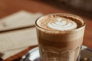
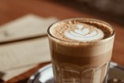

Кофе Латте
250 мл
Стоимость:
140
руб.
Кофе латте – это необычный напиток, состоящий из молока, молочной пены и эспрессо. Напиток подается в виде слоеного горячего коктейля и пользуется довольно большой популярностью в европейских странах.
Латте, ка ни странно, изобрели итальянские домохозяйки. Когда-то семья итальянцев в полном составе садилась за стол и начинала завтракать. Взрослые пили натуральный черный кофе, а чтобы дети чувствовали себя наравне со взрослыми, им в напиток наливали горячее молоко, тем самым понизив концентрацию кофеина. Детский кофе получался немного запятнанным, поэтому его назвали «запятнанное молоко», что на итальянском звучит как «латте».
 

С тех давних пор приготовление напитка приобрело множество традиций и условностей. Многие даже считают, что приготовить латте в домашних условиях невозможно, потому что для взбивания крепкой пены нужна специальная техника. Но для настоящего любителя латте это не проблема, ведь молочную пену можно сделать с помощью блендера. Конечно она не будет слишком плотная и устойчивая, но на вкус напитка это не повлияет.
Такой кофе с молоком во время беременности пойдет на пользу женщине и ее ребенку.
Итальянцы пьют латте исключительно с утра. Существует два основных варианта подачи:
1. В высоком прозрачном бокале с соломинкой. Однако некоторые гурманы утверждают, что пластмасса портит вкус латте;
2. В бокале с кофейной ложечкой. Если аккуратно размешать ею пенку, напиток приобретёт особенно нежную текстуру. Однако гость не нарушит этикета, если сперва при помощи ложки полакомится пенкой, а затем выпьет кофе.
Вместе с латте подают сахарницу или стикер сахара. Кофе хорошо сочетается с выпечкой, желе, муссами, десертами с маскарпоне.
Очень эффектный способ подачи кофе – латте-арт. Чёрный кофе наливают в широкую низкую керамическую чашку. Затем её наклоняют, аккуратно доливают молоко. Когда носик питчера можно будет удерживать на расстоянии 3–4 мм от поверхности кофе в чашке, молочной пеной рисуют узоры: стилизованные цветы, листья, забавных зверюшек.
Обратно в меню
Стоимость:
140
руб.
1. В высоком прозрачном бокале с соломинкой. Однако некоторые гурманы утверждают, что пластмасса портит вкус латте;
2. В бокале с кофейной ложечкой. Если аккуратно размешать ею пенку, напиток приобретёт особенно нежную текстуру. Однако гость не нарушит этикета, если сперва при помощи ложки полакомится пенкой, а затем выпьет кофе.
Вместе с латте подают сахарницу или стикер сахара. Кофе хорошо сочетается с выпечкой, желе, муссами, десертами с маскарпоне.